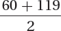
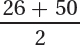

Chapter 1 covered levels of measurement, classifying numbers as nominal, ordinal, interval, or ratio. Now let’s learn another way to classify numbers, as discrete or continuous. Knowing whether a number is discrete or continuous will be important in the next section of this chapter, which addresses how to graph a frequency distribution.
Because fractional values for continuous numbers represent distance, continuous numbers are always interval- or ratio-level numbers. But not all interval- or ratio-level numbers are continuous.
Discrete numbers answer the question “How many?” For example, the answers to questions like how many siblings one has, how many neurons are in a spinal cord, or how many jeans are in a closet are all discrete numbers. Discrete numbers take whole number values only and have no “in-between,” or fractional, values. No matter how raggedy a person’s favorite pair of jeans is, it’s still one pair of jeans. One would never say that a pair of jeans with a lot of holes is 0.79 of a pair of jeans. Nominal- and ordinal-level numbers are always discrete. Sometimes, interval- and ratio-level numbers are discrete.
Continuous numbers answer the question “How much?” For example, the answers to questions like how much aggression a person has, how much intelligence one has, or how much a person weighs would be continuous numbers. Continuous numbers can take on values between whole numbers, that is, they may have fractional values. The number of decimal places reported for continuous numbers, how specific they are, depends on the measuring instrument used. More precise measuring instruments allow attributes to be measured more exactly.
Because fractional values for continuous numbers represent distance, continuous numbers are always interval- or ratio-level numbers. Keep in mind, though, that not all interval- or ratio-level numbers are continuous. Figure 2.4 is a flowchart that leads one through the process of determining whether a number is discrete or continuous.
51
Q If a number, like how many children in a family, is discrete and only takes whole number values, why is the average number of children in families reported as a decimal value such as 2.37?
A Individual cases can only take on whole number values if a variable is discrete, but math can be done on these whole numbers to obtain meaningful fractional values.
An example should make it clearer how continuous numbers can take on in-between values. Weight is a continuous number. Suppose Tyrone stepped on a digital scale, one that weighs to the nearest pound, and reported, “I weigh 175 pounds.” Does Tyrone weigh exactly 175 pounds? If there were a more precise scale, one that weighed to the nearest tenth of a pound, his weight might turn out to be 175.3 pounds. And, with an even more precise scale, one that measured to the nearest hundredth of a pound, his weight might now be found to be 175.34 pounds. How much Tyrone weighs depends on the precision of the scale used to measure him. Theoretically, continuous numbers can always be made more exact by using a better—more precise—measuring instrument.
52
Tyrone could weigh exactly 175 pounds, but he probably doesn’t. Statisticians think of his weight as falling within an interval that has a midpoint of 175. The question is this: How wide is the interval? How much or how little does Tyrone really weigh?
The answer is that Tyrone weighs somewhere from 174.5 to 175.5 pounds. The scale reports weight to the nearest pound, so the unit of measurement is 1 pound. Tyrone’s real weight falls somewhere in the interval from half a unit of measurement below his reported weight to half a unit of measurement above his reported weight. That’s from 175 – 0.5 = 174.5 to 175 + 0.5 = 175.5.
If Tyrone weighed less than 174.5, say, 174.2, then the scale would have reported his weight as 174, not 175 pounds. And if he weighed more than 175.5, say, 175.9, it would have reported his weight as 176 pounds. It is not clear where in the range from 174.5 to 175.5 his weight really falls, but his weight does fall in that range. His weight—a continuous number—is reported as the midpoint (175) of a range of values, any of which could be his real weight.
A single continuous number represents a range of values. To help understand this, think back to high school chemistry and measuring how acidic or basic a liquid was. This was done by dipping pH paper into the liquid and comparing the color of the pH paper to a key. An example of a key for pH is shown in Figure 2.5.
Suppose one dipped a piece of the pH paper from Figure 2.5 into a solution and it turned the shade associated with a pH of 6. Is the pH of the solution exactly 6? The pH is closer to 6 than to 4, or else the paper would have turned the lighter shade for 4. It is also closer to 6 than to 8, because the paper was not the darker shade for 8. The pH of the solution is closer to 6 than to 4 or 8, but it probably is not exactly 6.
In what range does the pH of the solution fall? This pH paper measures to the nearest 2 points so that is the unit of measurement. Half of the unit of measurement is 1, so subtracting that from 6 and adding it to 6 give the range within which the pH of the solution really falls: between 5 and 7. When this pH paper says 6, it really means somewhere between 5 and 7.
Those pH values, 5 and 7, are called the real limits of the interval. Real limits are the upper and lower bounds of a single continuous number or of an interval in a grouped frequency distribution for a continuous variable.
Table 2.10, the grouped frequency distribution of IQ for the 68 sixth graders, can be used to examine the real limits for an interval in a grouped frequency distribution. Here, IQ is measured to the nearest whole number. However, it would be possible to make a test that measures IQ to the nearest tenth or hundredth of a point, so IQ is a continuous variable. In Table 2.10, the bottom IQ interval ranges from 60 to 69, what are called the apparent limits for the interval. These are called apparent limits because they represent how wide the interval appears to be. But an IQ score of 60, at the bottom of the interval, really ranges from 59.5 to 60.5 and a score of 69, at the top of the interval, really ranges from 68.5 to 69.5. So, the scores in the 60 to 69 interval really fall somewhere in the range from 59.5, the real lower limit of the interval, to 69.5, the real upper limit. For continuous measures, real limits make researchers aware of how (im)precise their measures are.
53
The next section of this chapter turns to making graphs. Differentiating between discrete numbers and continuous numbers is important when figuring out what graph to make, so here’s more practice.
A professor surveys a group of college students about how much time, in minutes, they spend on schoolwork per week. She makes a grouped frequency distribution that has intervals of 0–59 minutes, 60–119 minutes, 120–179 minutes, and so on. Is this a discrete measure or a continuous measure? What are the real limits for the 60–119 interval? For that interval, what are the interval width and the midpoint?
To figure this out, follow the flowchart in Figure 2.4. Minutes is a ratio-level variable, so it can be either discrete or continuous. To decide, one needs to think if the scale could be made more precise and to measure minutes to fractional values. The answer is yes. So, the amount of time spent studying is a continuous variable. The real lower limit for the 60–119 interval is 59.5, which is half a unit of measurement below the apparent lower limit of the interval. Similarly, the real upper limit for the interval is 119.5, half a unit of measurement above the apparent upper limit. The interval width is 60, the distance between the real limits of an interval, calculated by 119.5 – 59.5. And the midpoint of the interval is 89.5, halfway between 60 and 119, calculated by  .
A developmental psychologist finds out, from a national sample of teenagers, how many texts they send per week. He ends up making a grouped frequency distribution that has intervals of 1–25, 26–50, 51–75, and so forth. Is this a continuous or a discrete measure? For the second interval, 26–50, what are the real limits? For that interval, what are the interval width and the midpoint?
Again, use the flowchart in Figure 2.4 to figure out whether this is a continuous or a discrete measure. The number of texts sent is a ratio-level number, so it could be either continuous or discrete. A text is a text is a text, whether it is one character long or 160. One can’t measure the number of texts more precisely than with whole numbers, which means that this variable, number of texts sent, is a discrete number. If a person sends 26 texts, he or she has sent 26 texts, not somewhere from 25.5 to 26.5 texts. This means that the real limits of the interval are the same as the apparent limits: 26–50. The interval width is 25 and the midpoint is 38, halfway between 26 and 50, calculated by way of .
54
Review Your Knowledge
2.08 How does a continuous number differ from a discrete number?
2.09 If there were five cases in the interval 45–49 of a grouped frequency distribution for a continuous variable and their original raw scores were unknown, what value(s) should be assigned to them?
Apply Your Knowledge
2.10 For each variable, determine if it is continuous or discrete.
The amount of snowfall, in inches, recorded during winter in a city
The number of days, in the past 30, on which a person has consumed any alcohol
A person’s level of depression, as measured by the percentage of questions on a scale that was endorsed in the depressed direction
2.11 Below are sets of consecutive intervals from frequency distributions for continuous variables. For the second interval in each set, the one in bold, tell the real lower limit; the real upper limit; the interval width, i; and the interval midpoint, m.
15–19; 20–24; 25–29
205–245; 255–295; 305–345
1.1–1.2; 1.3–1.4; 1.5–1.6
1,000–2,000; 3,000–4,000; 5,000–6,000